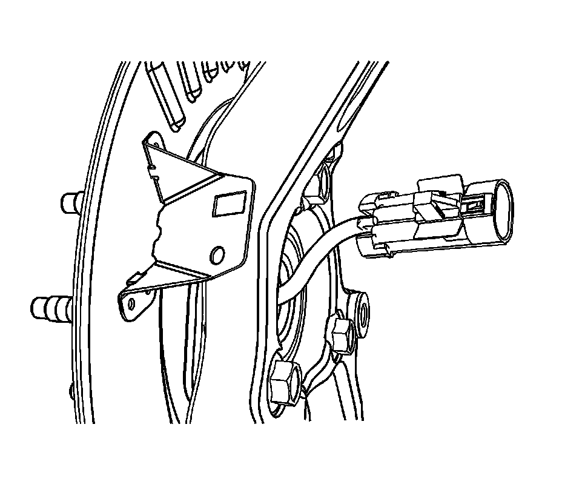
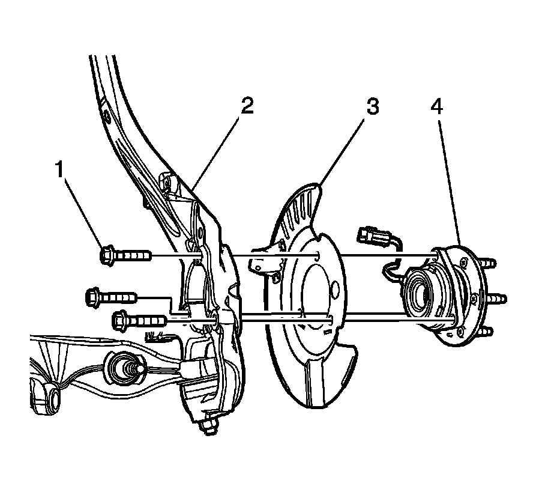

Front Suspension
Front Wheel Bearing and Hub Replacement
Removal Procedure
1. Raise and support the vehicle. Refer to Lifting and Jacking the Vehicle (Service and Repair) .
2. Remove the tire and wheel. Refer to Tire and Wheel Removal and Installation (Service and Repair) .
3. Separate the wheel drive shaft from the wheel bearing/hub assembly, if equipped.
* If servicing the left wheel bearing/hub, refer to Front Wheel Drive Shaft Replacement - Left Side (Front Wheel Drive Shaft Replacement - Left) .
* If servicing the right wheel bearing/hub, refer to Front Wheel Drive Shaft Replacement - Right Side (Front Wheel Drive Shaft Replacement - Right) .

4. Disconnect the wheel speed sensor electrical connector at the splash shield.
5. Remove the brake rotor from the vehicle. Refer to Front Brake Rotor Replacement (Service and Repair) .

6. Remove the wheel bearing/hub retaining bolts (1).
7. Remove the front brake shield (3).
8. Remove the wheel bearing/hub (4) from the knuckle (2).
Installation Procedure
Notice: Avoid tool contact to the outer constant velocity boot seal when removing the wheel bearing mounting bolts. Failure to observe this notice may result in damage to the CV boot.
1. Position the front brake shield (3) between the knuckle (2) and the wheel bearing/hub (4).
2. Position the wheel bearing/hub (4) in the knuckle (2).
3. Install and hand tighten the wheel bearing/hub retaining bolt (1).
Notice: Refer to Fastener Notice (Fastener Notice) .
4. Tighten the wheel bearing/hub bolts (1).
Tighten the wheel bearing/hub bolts to 135 N.m (100 lb ft).
Notice: Avoid tool contact to the outer constant velocity boot seal when removing the wheel bearing mounting bolts. Failure to observe this notice may result in damage to the CV boot.
5. Install the wheel drive shaft retaining nut, if equipped.
* If servicing the left wheel bearing/hub, refer to Front Wheel Drive Shaft Replacement - Left Side (Front Wheel Drive Shaft Replacement - Left) .
* If servicing the right wheel bearing/hub, refer to Front Wheel Drive Shaft Replacement - Right Side (Front Wheel Drive Shaft Replacement - Right) .
6. Reconnect the wheel speed sensor electrical connector.
7. Install the wheel speed sensor wiring harness to the retainers on the upper control arm and the frame.
8. Install the brake rotor. Refer to Front Brake Rotor Replacement (Service and Repair) .
9. Install the tire and wheel. Refer to Tire and Wheel Removal and Installation (Service and Repair) .
10. Remove the support and lower the vehicle.